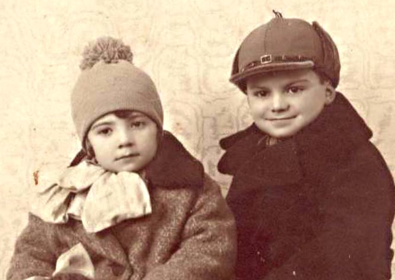

Ana Benkel de Vinocur nació el 25 de setiembre de 1926 en Lodz, Polonia.
Su familia estaba compuesta por cinco personas:
su padre, Henoj Wolf Benkel,
su madre, Rivka Bocian,
su hermano mayor, Hersheck (Enrique), su hermanito menor, Leibush, y ella.
Era una familia feliz de judíos observantes de clase media.
Tenía una voz privilegiada y le encantaba cantar como solista en el coro de la escuela y aprender a tocar el piano.
Lodz era una ciudad industrial, por eso en las vacaciones la familia viajaba en un carro tirado por caballos para descansar en el campo.
Ana disfrutaba del juego con los animales de granja, del aire puro y fresco, de la armonía familiar y de la libertad.